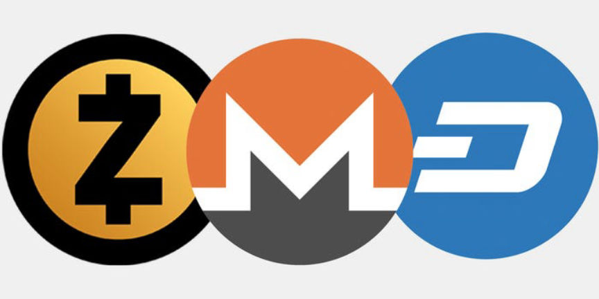
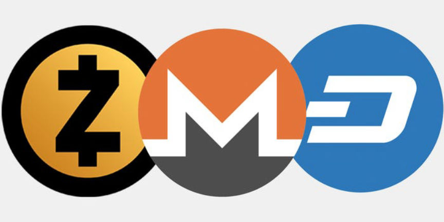

Top Privacy Cryptocurrencies
Privacy coins are cryptocurrencies designed to give their users anonymity. They use a combination of technologies such as zero-knowledge proof, Ring signatures, and mixers to hide their users' identities and transaction amounts.

They include:
Monero provides financial privacy and anonymity to its users by default. To do so, Monero uses a combination of ring signatures, stealth addresses, and Ring Confidential Transactions(RingCT).
Stealth addresses are one-time addresses generated for each transaction. They make sure a recipient's public address cannot be linked to any transaction. Stealth addresses ensure that only the sender and the receiver know where the funds were sent.
Ring signatures combine a group of signatures, making it difficult to determine who initiated and signed a particular transaction.
RingCT is an improvement on Ring signatures that makes the transactions confidential by hiding the amount being transacted.
Zcash does not provide its users with anonymity by default. To use its privacy features, users have to use private addresses (z-addresses), they start with a z.
When private addresses are used, Zcash uses zero-knowledge proofs to protect its users' privacy. In zero-knowledge proofs, one can prove to another that a statement is true, without revealing any unnecessary information beyond the validity of the statement.
Zcash specifically uses a form of zero-knowledge cryptography called Zero-Knowledge Succinct Non-Interactive Argument of Knowledge (zk-SNARKs) to provide privacy. Zk-SNARKs allows the sender of a transaction to prove that the transaction meets the conditions of a valid transaction without revealing any information about the sender, receiver, or transaction amount.
PirateChain, Horizen, and PIVX also use zero-knowledge cryptography in their private transactions.
The Verge network integrates both The Onion Router (Tor) and Invisible Internet Project (I2P) into its wallet software to hide the IP addresses of its users.
Tor protects your privacy on the internet by routing data through multiple random servers, making it difficult to trace the source of the data.
I2P is a decentralized P2P network that allows its users to communicate anonymously. In addition to using end-to-end encryption, I2P uses uni-directional communication tunnels to further protect its users.
To further protect the financial privacy of its users, Verge also uses ring signatures and stealth addresses.
GRIN is a decentralized privacy-focused cryptocurrency that uses a technology called Mimblewimble to provide users with strong privacy protections. Mimblewimble is a type of blockchain protocol that allows for confidential transactions without revealing any identifying information about the sender, receiver, or transaction amount.
In the Mimblewimble blockchain, there are no identifiable and reusable addresses. The users generate one-time use addresses for each transaction, which helps prevent address reuse and makes it more difficult to link transactions to specific users.
A Mimblewimble block can be treated as one large transaction not a combination of individual transactions. This makes it difficult to trace individual transactions as no information about individual transactions is revealed. Transaction information is only known by the transaction's participants.
The privacy-focused coin, Beam, also uses Mimblewimble to provide its users with confidential transactions.
Decred gives its users the option to use its privacy-focused mixing protocol called CoinShuffle++ (CSPP).
CoinShuffle++ is a non-custodial CoinJoin mechanism whose aim is to hide the real owners of DCR coins. To provide anonymous outputs every mix must have a fixed denomination. This makes it hard to link outputs and inputs.
It is worth noting that Decred does not provide confidential transactions. This means that the anonymity provided by CoinShuffle++ is dependent on change outputs being handled correctly.
Dash is another cryptocurrency that gives its users the option of using CoinJoin to create anonymity.
These privacy coins provide varying levels of privacy. No system can guarantee complete anonymity. You should always assume that the privacy coin you use could one day become traceable.
On top of using privacy cryptocurrencies take these precautionary measures to further protect your privacy;

They include:
Monero (XMR)
Monero provides financial privacy and anonymity to its users by default. To do so, Monero uses a combination of ring signatures, stealth addresses, and Ring Confidential Transactions(RingCT).
Stealth addresses are one-time addresses generated for each transaction. They make sure a recipient's public address cannot be linked to any transaction. Stealth addresses ensure that only the sender and the receiver know where the funds were sent.
Ring signatures combine a group of signatures, making it difficult to determine who initiated and signed a particular transaction.
RingCT is an improvement on Ring signatures that makes the transactions confidential by hiding the amount being transacted.
Zcash (ZEC)
Zcash does not provide its users with anonymity by default. To use its privacy features, users have to use private addresses (z-addresses), they start with a z.
When private addresses are used, Zcash uses zero-knowledge proofs to protect its users' privacy. In zero-knowledge proofs, one can prove to another that a statement is true, without revealing any unnecessary information beyond the validity of the statement.
Zcash specifically uses a form of zero-knowledge cryptography called Zero-Knowledge Succinct Non-Interactive Argument of Knowledge (zk-SNARKs) to provide privacy. Zk-SNARKs allows the sender of a transaction to prove that the transaction meets the conditions of a valid transaction without revealing any information about the sender, receiver, or transaction amount.
PirateChain, Horizen, and PIVX also use zero-knowledge cryptography in their private transactions.
Verge (XVG)
The Verge network integrates both The Onion Router (Tor) and Invisible Internet Project (I2P) into its wallet software to hide the IP addresses of its users.
Tor protects your privacy on the internet by routing data through multiple random servers, making it difficult to trace the source of the data.
I2P is a decentralized P2P network that allows its users to communicate anonymously. In addition to using end-to-end encryption, I2P uses uni-directional communication tunnels to further protect its users.
To further protect the financial privacy of its users, Verge also uses ring signatures and stealth addresses.
Grin (GRIN)
GRIN is a decentralized privacy-focused cryptocurrency that uses a technology called Mimblewimble to provide users with strong privacy protections. Mimblewimble is a type of blockchain protocol that allows for confidential transactions without revealing any identifying information about the sender, receiver, or transaction amount.
In the Mimblewimble blockchain, there are no identifiable and reusable addresses. The users generate one-time use addresses for each transaction, which helps prevent address reuse and makes it more difficult to link transactions to specific users.
A Mimblewimble block can be treated as one large transaction not a combination of individual transactions. This makes it difficult to trace individual transactions as no information about individual transactions is revealed. Transaction information is only known by the transaction's participants.
The privacy-focused coin, Beam, also uses Mimblewimble to provide its users with confidential transactions.
Decred (DCR)
Decred gives its users the option to use its privacy-focused mixing protocol called CoinShuffle++ (CSPP).
CoinShuffle++ is a non-custodial CoinJoin mechanism whose aim is to hide the real owners of DCR coins. To provide anonymous outputs every mix must have a fixed denomination. This makes it hard to link outputs and inputs.
It is worth noting that Decred does not provide confidential transactions. This means that the anonymity provided by CoinShuffle++ is dependent on change outputs being handled correctly.
Dash is another cryptocurrency that gives its users the option of using CoinJoin to create anonymity.
These privacy coins provide varying levels of privacy. No system can guarantee complete anonymity. You should always assume that the privacy coin you use could one day become traceable.
On top of using privacy cryptocurrencies take these precautionary measures to further protect your privacy;
- Never reuse an address.
- Do not purchase your cryptocurrencies from sources that require KYC.
- Always use a VPN or Tor.